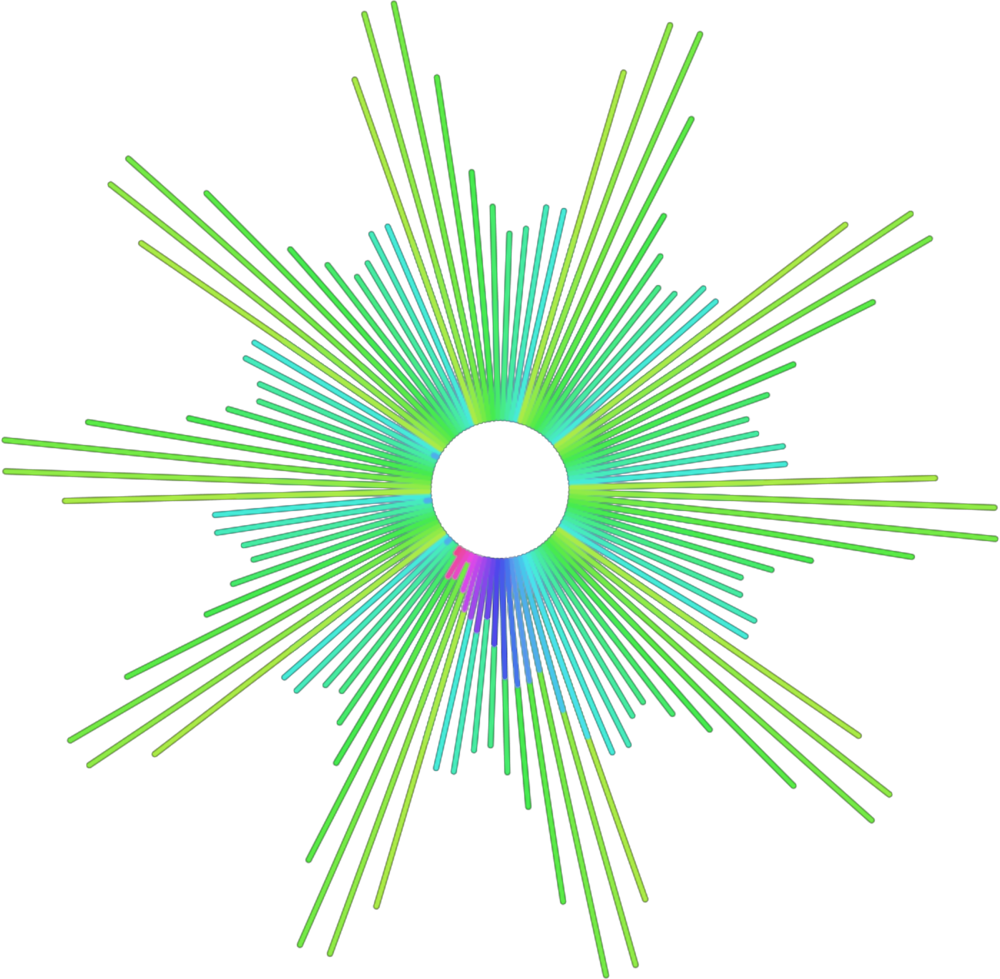

This project explores the connection between sound and visuals
through a responsive audio visualizer that transforms music into
dynamic patterns and imagery.

Use the Live mode in the navigation bar to let the visualizer react to
the sounds in your environment, or choose Load to upload your own
audio or experience one of the three preloaded tracks.
Below, you'll find a visual comparison of those three
preloaded tracks at different moments in time, each frame capturing
the rhythm, tone, and energy of a specific timestamp. Together, they
reveal how music can shape movement and form in unexpected ways.